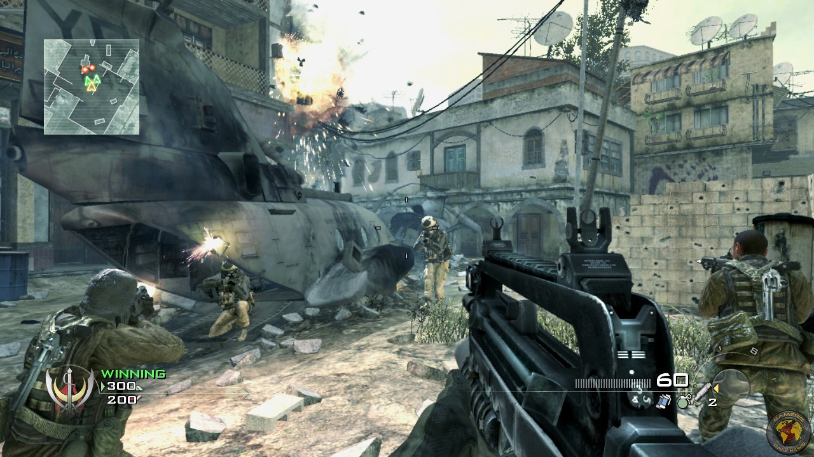
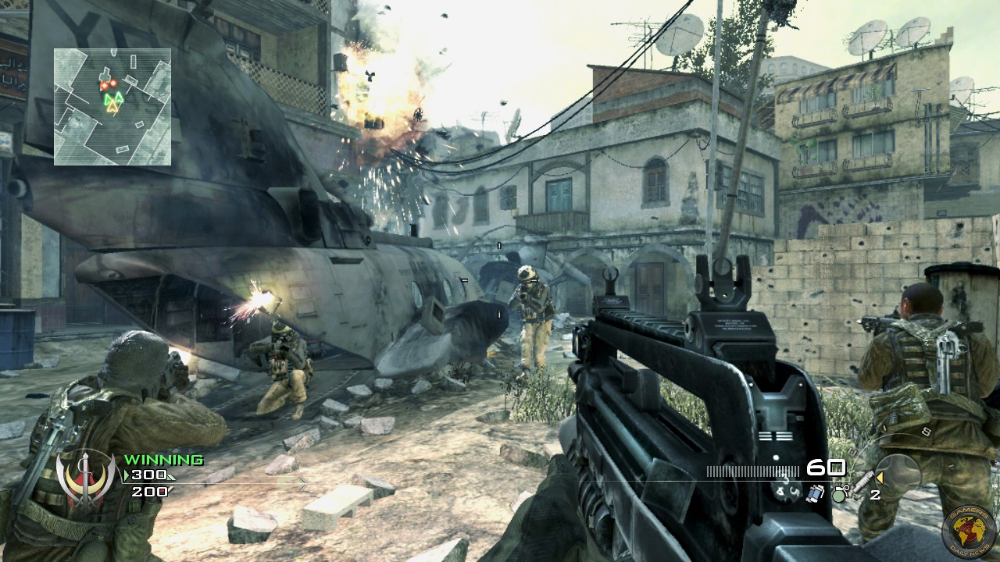

Call Of Duty: Modern Warfare -- Here's The New Crash Map
 

One of the most iconic maps from 2007's Call of Duty 4: Modern Warfare, Crash, has been remade for the new Modern Warfare. Crash is now available as part of Season One update that is free for all players on PC, PS4, and Xbox One, but new gameplay footage from it has emerged online just ahead of time. If you haven't yet dived into the update's new content, you can get a look at what Crash looks like in the video below.
Datum objave: 4.12.2019.
Izvor